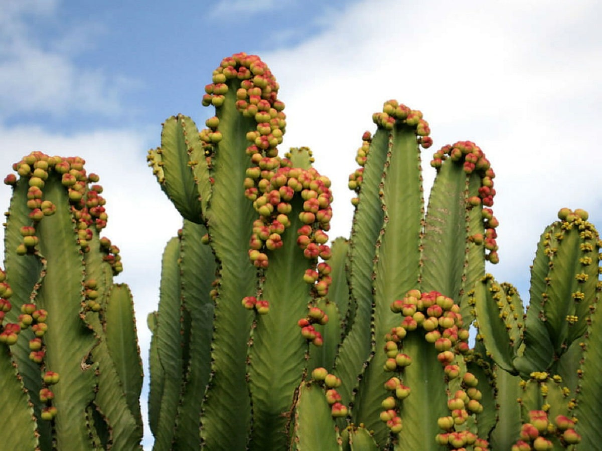
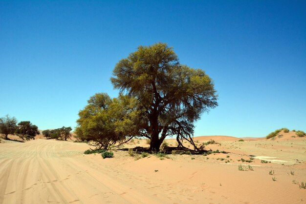
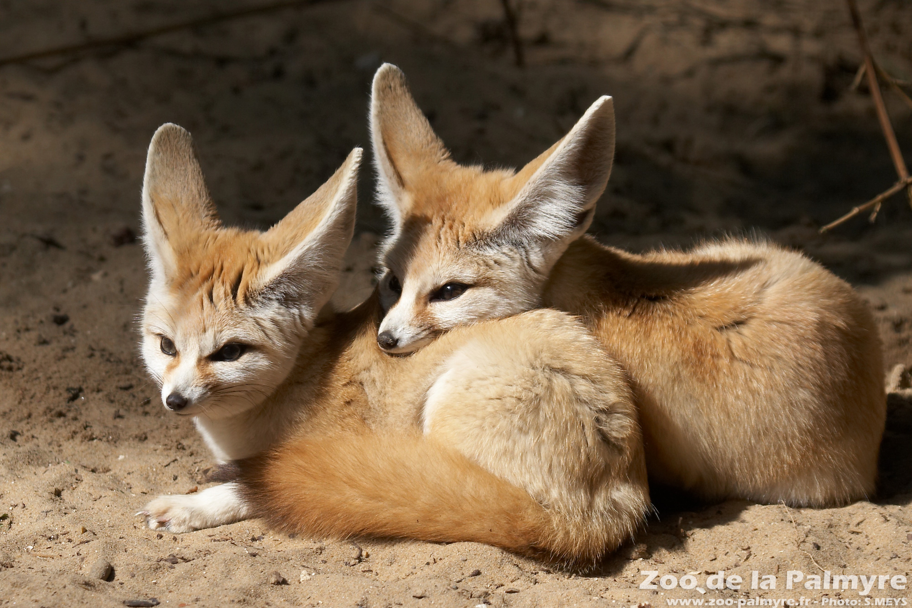
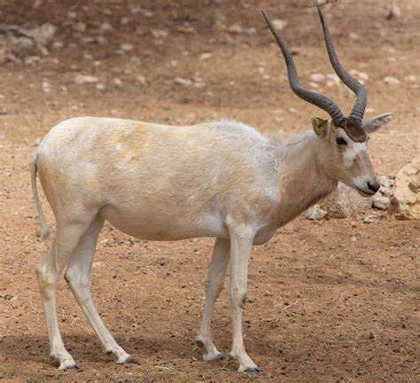
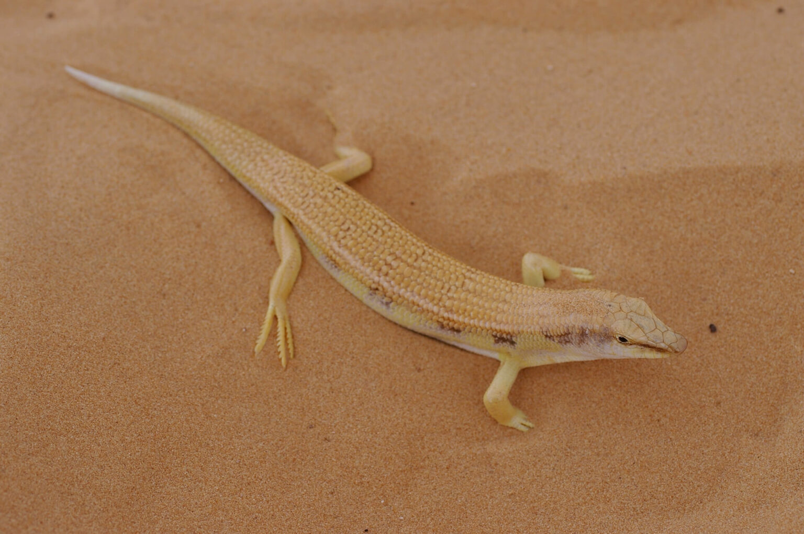

Piante
Euforbia del deserto
Nome scientifico: Euphorbia balsamifera
Famiglia: Euphorbiaceae
Distribuzione: Diffusa nelle zone aride e sabbiose del deserto del Sahara.
Alimentazione: È una pianta succulenta che accumula acqua nei suoi fusti per sopravvivere alla siccità.
Curiosità: L'euforbia del deserto può essere velenosa se ingerita e viene utilizzata in medicina tradizionale per trattare ferite e malattie della pelle.

Tamarisco
Nome scientifico: Tamarix aphylla
Famiglia: Tamaricaceae
Distribuzione: Si trova principalmente in aree aride, come i deserti del Medio Oriente e del Nord Africa.
Alimentazione: Pianta resistente alla siccità, si nutre di acqua salmastra presente nel suolo del deserto.
Curiosità: È una pianta che può crescere rapidamente e sviluppare radici profonde, resistendo al caldo estremo del deserto.

Welwitschia mirabilis
Nome scientifico: Welwitschia mirabilis
Famiglia: Welwitsiaceae
Distribuzione: Nativa delle regioni desertiche del Namibia e dell'Angola.
Alimentazione: Adatta alla siccità, accumula acqua grazie alle sue radici e alle sue foglie.
Curiosità: Questa pianta è famosa per avere solo due foglie, che crescono per tutta la sua vita.

Animali
Fennec
Nome scientifico: Vulpes zerda
Distribuzione: Viene trovato nel deserto del Sahara e in altre aree desertiche del Nord Africa.
Alimentazione: Carnivoro, si nutre di roditori, insetti, uccelli e piante.
Curiosità: Il fennec ha delle orecchie molto grandi che gli permettono di dissipare il calore corporeo in ambienti estremamente caldi.

Addax
Nome scientifico: Addax antelope
Distribuzione: Presente nel deserto del Sahara.
Alimentazione: Erbivoro, si nutre di piante e arbusti deserto-dipendenti.
Curiosità: Questo animale è noto per la sua capacità di sopravvivere senza acqua per lunghi periodi.

Lucertola delle sabbie
Nome scientifico: Acanthodactylus boskianus
Distribuzione: Diffusa nel deserto del Sahara e in altre regioni aride.
Alimentazione: Insetti e piccoli artropodi.
Curiosità: La lucertola delle sabbie è molto veloce e ha la capacità di muoversi rapidamente tra le dune di sabbia.

Clima
Clima arido, con precipitazioni scarse (meno di 250 mm/anno). Escursioni termiche forti: giornate molto calde (fino a 50 °C) e notti fredde. Aridità estrema.
Esempi
- Deserto del Sahara
- Deserto del Namib
- Deserto del Kalahari